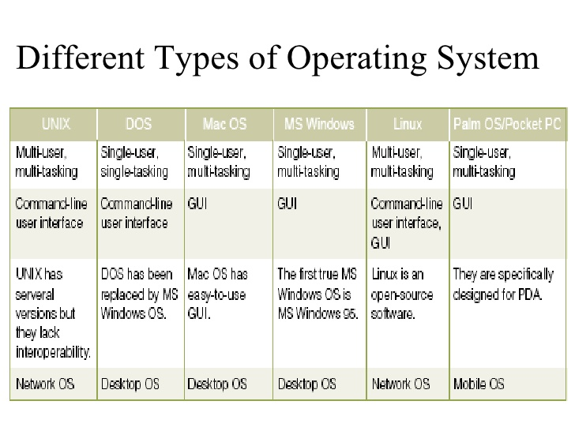

What is Operating System?
An operating system (OS) is system software that manages computer hardware and software resources and provides common services for computer programs. All computer programs, excluding firmware, require an operating system to function.
Time-sharing operating systems schedule tasks for efficient use of the system and may also include accounting software for cost allocation of processor time, mass storage, printing, and other resources.
For hardware functions such as input and output and memory allocation, the operating system acts as an intermediary between programs and the computer hardware,[1][2] although the application code is usually executed directly by the hardware and frequently makes system calls to an OS function or is interrupted by it. Operating systems are found on many devices that contain a computer – from cellular phones and video game consoles to web servers and supercomputers.
